Содержание
- Что делает WhatsRuning?
- Подробности процесса
- Подробнее
- Фильтрация, сортировка и поиск
- Отслеживание процессов
- Интеграция с PMX
- Использование WhatsRunning с ADB
- Версии WhatsRunning
- Часто задаваемые вопросы (FAQ)
- Почему WhatsRunning требует root или ADB доступ?
- Мое устройство без root. Как я могу использовать WhatsRunning?
- Почему WhatsRunning требует разрешение INTERNET?
- Насколько WhatsRunning безопасен для конфиденциальности?
- Что такое «Активити / Службы сироты?
- В чем разница между пунктами "Использование ЦП" и "Влияние на ЦП" в сортировке?
- Что показывают цифры ввод/вывод в подробностях процесса?
- Почему я вижу всплывающее уведомление «Процесс не существует»?
- Загрузки / Скриншоты
- Рейтинг и отзывы
- Связаться с нами
Больше FAQ
Что делает WhatsRuning?
WhatsRunning показывает что работает на вашем устройстве, включая:
Процессы
Почти всё о нативных процессах:
- PPID, PID, UID, GID, группы, количество дочерних процессов, количество тредов (потоков)
- Контекст SELinux, Linux capabilities, CGroups
- Использование ЦП, использование ОЗУ и SWAP
- Приоритет ЦП, приоритет I/O, значение OOM kill
- Командная строка, исполняемый путь, возраст, использование I/O (хранилища)
Приложения Android
Подробная информация о фреймворке, системных и пользовательских приложениях:
- Название приложения, имя приложения, важность, последнее активное время
- Имена задач (активити), рабочее состояние, последнее активное время
- Имена служб приложений, типы, рабочее состояние, количество клиентов, время старта, последнее активное время
- Службы init и фреймворк (если возможно)
Использование памяти
- ОЗУ - всего, свободно и распределено
- ОЗУ используемая активными приложениями, приложениями в кэш, процессами не относящимися к приложениям, ядром и ZRAM
- Общее количество Swap, использование приложениями и процессами, не относящимися к приложениям
Эти подробности, безусловно, прояснят некоторую путаницу, относительно управлению памятью в Android, которая могла возникнуть у вас ранее.
- Почему ваша ОЗУ всегда заполнена, даже когда вы не используете много приложений?
- Процессы каких приложений не убиваются, даже если вы их не используете?
- Что такое кешированные приложения и какие из них находятся в списке целей операционной системы Android, которые будут убитыми следующими?
Системные службы
Службы Init (нативные) и фреймворк (Java), которые "вечно" работают.
Службы приложения
Фоновые (запущенные и связанные), переднего плана и постоянные службы, работающие внутри процессов приложения.
Активные приложения
Приложения, активно работающие в фоновом или режиме переднего плана, либо в кэшированном состоянии.
Лог состояния приложения
Лог с временной меткой, показывающий, как приложения переключаются между активными и неактивными состояниями.
Задания по расписанию
Сигналы тревоги, которые могут неоднократно пробуждать устройство, и запланированные задачи, которые приложения выполняют в фоновом режиме.
Автозапускающиеся приложения
Приложения, которые запускаются при загрузке устройства.
Вэйклоки / Вызовы пробуждения
Приложения, которые держали устройство в активном состоянии. Также счетчик, показывающий, сколько раз приложение выводило устройство из спящего режима.
Пожиратели батареи
Список приложений, работающих на переднем плане и/или в фоне дольше остальных.
Состояние батареи
Служебное уведомление, показывающее текущее состояние батареи, включая уровень заряда батареи, температуру, скорость зарядки / разрядки, расчетное время, среднюю скорость разрядки с включенным / выключенным дисплеем и в режиме doze.
Смотрите скриншоты для получения более подробной информации.
Состояние процесса
Служебное уведомление, показывающее количество работающих / "мертвых" процессов и "живых" системных / пользовательских приложений. Подробнее, смотрите Отслеживание процессов.
Также смотрите GitHub README.
Подробности процесса

- Имя процесса (командная строка)
- PID
- UID / GID
- Использование ЦП
- Использование ЦП / swap
- Количество пакетов Android-приложений
- Счетчик задач (активити) приложения
- Счетчик служб приложения
- Возраст процесса
Более подробные сведения смотрите на скриншотах.
Подробнее
Сведения о памяти
Пожалуйста, ознакомьтесь с подробностями здесь.
Службы приложения
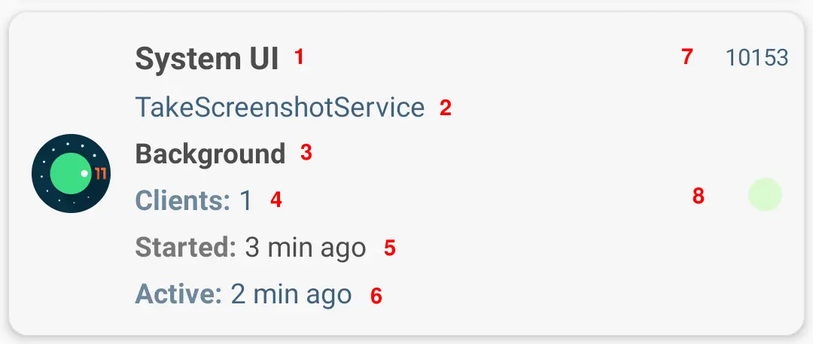- Название приложения
- Имя службы
- Тип службы: фоновый, переднего плана, системная, постоянная и т. д.
- Нет. клиентские приложения привязаны к службе
- Когда служба была запущена
- Когда служба была активной в последний раз
- UID приложения
- Состояние приложения: работает или остановлено
Активные приложения

- Название приложения
- Количество активити (экраны) и служб, работающих в приложении
- Важность приложения
- Когда приложение запустилось
- Когда приложение было активным в последний раз
- UID приложения
- Состояние приложения: очень активное, менее активноеили неактивное
- Оценка уничтожения — вероятность закрытия приложения, когда устройству необходимо освободить оперативную память
Лог состояния приложения
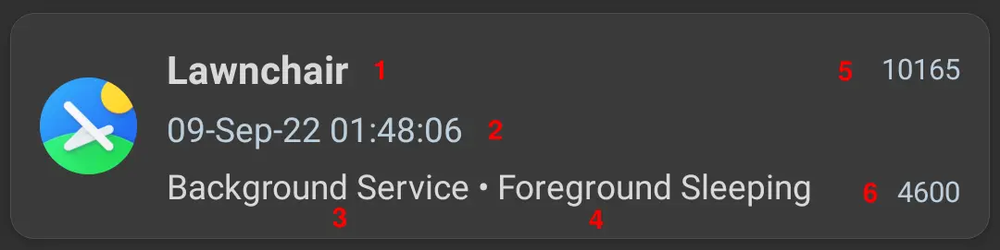- Название приложения
- Временная метка - когда приложение изменило свое состояние
- Новое состояние (пакета приложения)
- Новое состояние (UID приложения)
- UID приложения
- PID процесса приложения
Сводка
Сводное представление показывает, сколько раз приложение переключалось в состояние с тех пор, как был включен сбор лога состояния приложения.

- Название приложения
- Новое состояние
- UID приложения
- Количество
На скриншоте видно, что приложение Telegram переключалось в состояние «служба переднего плана/активное состояние» 41 раз, в то время как Firefox открывался (переключался в состояние «Фон») 35 раз.
Сигналы тревоги

- Название приложения
- Если сигнал будит устройство
- Когда срабатывают сигналы
Запланированные задачи

- Название приложения
- UID
- Имя службы задачи
- Условия, которые должны быть выполнены перед запуском задачи
Автозапускающиеся приложения

- Название приложения
- Имя ресивера(ов)
- UID
Вэйклоки


- Название приложения
- UID
- Имя вэйклока
- Длительность ( т.е. длительность удержания вэйклока)
- Счетчик (сколько раз вэйклок удерживался)
Вызовы пробуждения
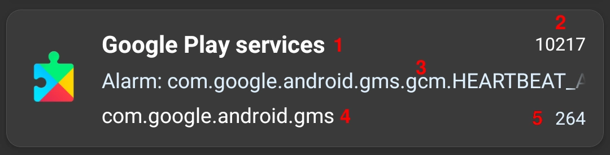- Название приложения
- UID
- Имя сигнала, который будит устройство
- Имя пакета
- Количество вэйклоков
Пожиратели батареи

- Название приложения
- UID
- Использование ЦП и сети
- Продолжительность активного использования приложений
- Продолжительность активити приложений на переднем плане (высокий приоритет) и в фоновом режиме (низкий приоритет)
- Общая продолжительность работы запущенных служб
- Количество запущенных служб
- Запущенная служба (отображается только в том случае, если включено в раскрывающемся меню)
- Название приложения
- Имя службы
- Общая продолжительность работы запущенных служб
- Счётчик запусков службы
Служба Отслеживание батареи показывает постоянное уведомление со статистикой батареи:
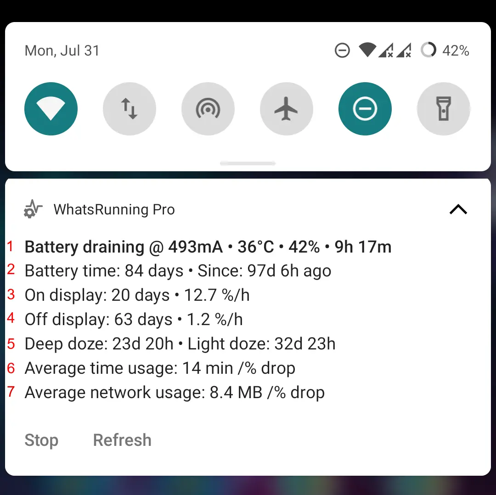- Разряд батареи или скорость заряда; температуру; уровень; и расчетное время (до полной разрядки или полной зарядки)
- Сколько времени устройство работает от батареи из общего времени
- Время работы от батареи при включенном экране; процент падения заряда батареи в час
- Время работы от батареи при выключенном экране; процент падения заряда батареи в час
- Время работы от батареи, когда устройство было в режиме doze
- Среднее время работы от батареи на процент падения заряда батареи
- Среднее использование сети на процент падения заряда батареи
Статистику батареи можно сбросить в правом верхнем меню экрана Пожиратели батареи.
Фильтрация, сортировка и поиск
Вы можете отфильтровать не интересующие вас процессы и приложения.
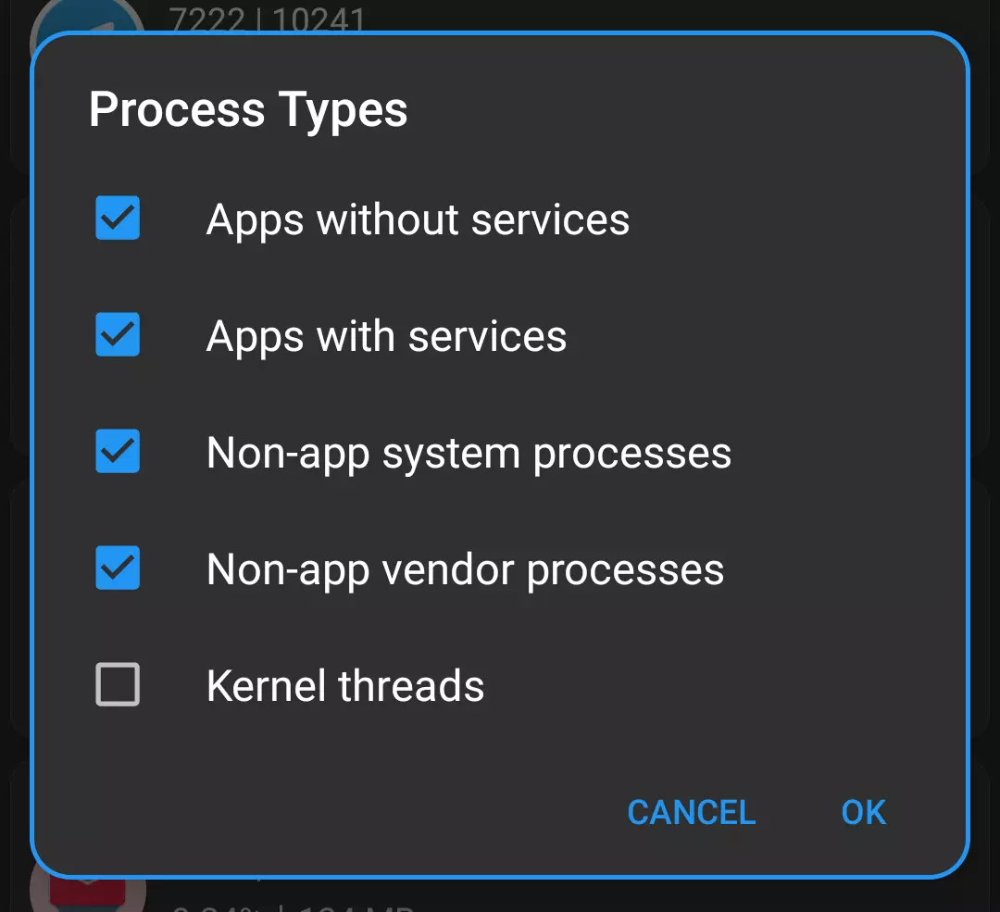Есть большой список ключевых слов, которые вы можете использовать для поиска конкретных вещей в интересующем вас списке.

А еще более длинный список параметров можно применить к сортировке списка процессов.
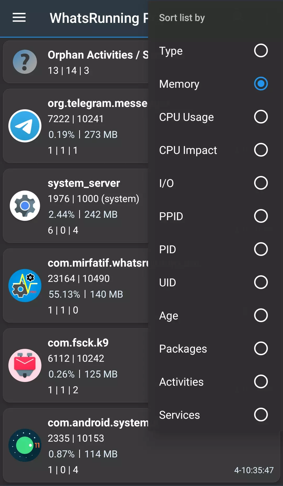- Тип: типы, определенные в фильтрах процессов. Смотрите скриншот выше.
- Память: ОЗУ
- Использование ЦП / Влияние на ЦП: Пожалуйста, посмотрите В чем разница между "Использованием ЦП" и "Влиянием на ЦП"?
- I/O: Данные считанные из хранилища и записанные в хранилище. См. proc(5).
- PPID / PID / UID / Age: Идентификатор родительского процесса, идентификатор процесса, идентификатор пользователя UNIX и возраст собственного процесса Linux. См. proc(5).
- Пакеты / Активити / Службы: Количество приложений, их видимые задачи и службы, работающие внутри родного процесса.
Отслеживание процессов
Вы когда-нибудь задумывались:
Какие приложения не спят, когда вы спите? И они продолжают запускаться и умирать, и делать свою работу без вашего ведома? Когда они запускаются, какие компоненты они используют, как долго они работают, сколько ресурсов они используют и когда они умирают?
Или какое приложение или процесс на вашем устройстве, неадекатно себя ведут, останавливается и запускается снова и снова, тратя впустую заряд батареи и другие ресурсы? Сколько раз они перезапускались за последние 24 часа?
Или какой процесс выглядит как чужак, вредоносное ПО, угроза вашей конфиденциальности?
Функция Отслеживание процессов – это единственный и простой ответ на все эти вопросы. С вашего согласия она продолжает работать в фоновом режиме, непрерывно наблюдая за процессами. Уведомление постоянно показывает краткую сводку жизни и смерти процессов.
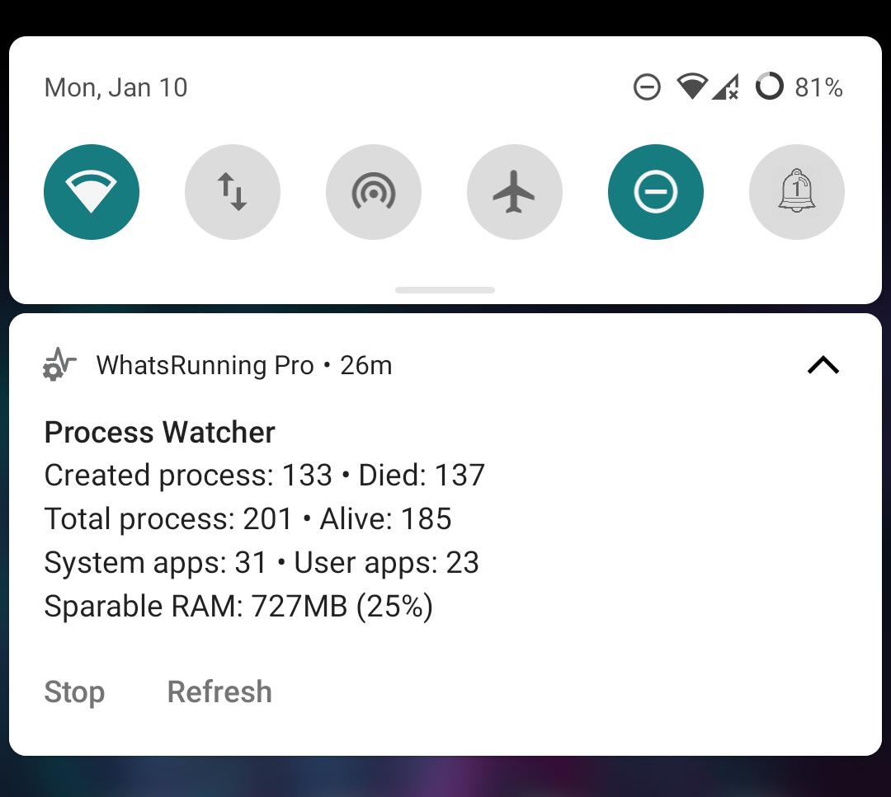Вы нажимаете на уведомление или пункт меню «Показать данные отслеживания», чтобы увидеть, какие процессы были запущены и остановлены с момента запуска отслеживания. Просто!

Используйте пункты меню, чтобы увидеть список всех процессов или процессов с некоторыми изменениями в их состоянии.
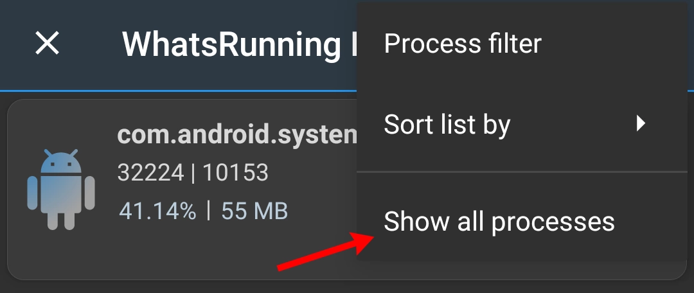
Поле PID показывает, сколько раз процесс создавался заново с момента запуска отслеживания.
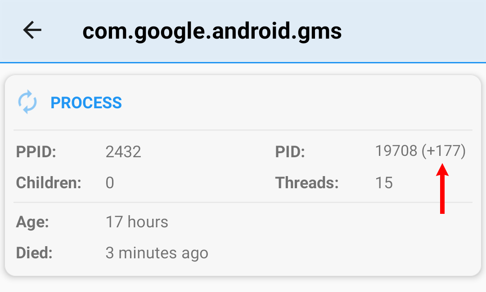В этом режиме вместо мгновенных значений показывается среднее потребление ресурсов (ЦП, ОЗУ и т.д.) для каждого процесса.
Обратите внимание, что из-за ограничения обычных устройств Android функция Отслеживание процессоа не является средством отслеживания процессов Linux в реальном времени. Так что очень короткоживущие процессы могут пропускаться. Если вас интересуют технические подробности, прочтите эту замечательную статью: The Difficulties of Tracking Running Processes on Linux.
Интеграция с PMX
PMX интегрирован с WhatsRunning, так что вы можете открывать одно приложение из другого.


Точно так же из WhatsRunning вы можете переключиться на PMX, чтобы узнать, какие разрешения предоставлены работающему (или неработающему) приложению.
Таким образом, из PMX вы можете переключиться на WhatsRunning, чтобы узнать, работает ли еще приложение с ограниченными разрешениями. Если да, то в каком состоянии он находится и сколько ресурсов использует.
Это особенно полезно при анализе эффекта таких разрешений, как RUN_IN_BACKGROUND.
Использование WhatsRunning с ADB
Ограничения ADB
Режим ADB не такой мощный, как root. В нашем случае, например, WhatsRunning потребуется больше времени для построения списка приложений, когда он работает с ADB.
Примечание: На некоторых OEM прошивках функциональность ADB может быть нарушена из-за отсутствия разрешений или других ограничений. Вы можете проверить текущий статус того, что может делать ADB, нажав пункт меню О приложении -> Привилегии:

К сожалению, мы не можем ничего сделать с этим. Поэтому некоторые функции доступны только на устройствах с root.
В частности, следующая информация доступна только на устройствах с root-доступом:
- I/O процесса (ввод/вывод) размер и приоритет I/O
- Размер ZRAM и подробности использования (swap)
- (Исполняемый) путь
exeпроцесса
Однако некоторые OEM-производители добавляют дополнительные настройки для управления привилегиями ADB. Например, вам нужно снять флажок "Отключить Мониторинг разрешений" на телефонах Oppo и "Разрешить предоставление разрешений" в настройках безопасности на телефонах Xiaomi. Смотрите этот вопрос для более детальной информации.
Следующие инструкции относятся к прошивкам, близким к AOSP. Кастомные прошивки могут иметь другие или отсутствующие настройки.
Android 10 и ниже
Итак, мы начинаем с того, как заставить WhatsRunning работать с ADB.
Если ваше устройство без root, вам необходимо включить ADB по сети перед использованием WhatsRunning. В некоторых устройствах есть пункты ADB по сети или Отладка по Wi-Fi, которые доступны в настройке Для разработчиков:

Если у вас нет этих настроек на вашем устройстве, необходимо один раз подключить устройство к USB-хосту, например ПК после каждой перезагрузки.
Показать экран настроек разработчика:
Перейдите в Настройки -> О телефоне и нажмите Номер сборки 5-7 раз.
Пункт Для разработчиков должен появиться непосредственно в разделе Настройки или в разделе Настройки -> Система, внизу.
Включение беспроводной отладки:
Включите Отладку по USB в настройках Для разработчиков.
Подключите телефон к ПК с помощью кабеля USB.
На ПК откройте окно терминала (или командную строку в Windows) и выполните:
adb tcpip 5555На вашем ПК должен быть доступен исполняемый файл
adb, чтобы выполнить указанную выше команду. Если его нет, то вот ссылка для загрузки.
Дополнительные шаги для верификации:
Отсоедините USB-кабель от устройства.
Подключите ваше устройство и ПК к общей сети Wi-Fi.
Получите IP адрес устройства (обычно в настройках WiFi или в Настройки -> О), это
192. 68.1.1.Выполните на ПК:
adb connect 192.168.1.1Выполните еще раз:
adb shell id -uТерминал должен напечатать
2000(или0).
Подключение WhatsRunning к ADB:
Запустите WhatsRunning и отметьте ADB Shell в выдвижном меню. Введите порт
5555и нажмите подключение.
Разрешите отладку по USB при запросе.

Оставьте отладку Отладку по USB включенной.
Для получения дополнительной информации смотрите это.
Андроид 11 и выше
На Android 11 и выше можно включить беспроводную отладку/отладку по Wi-Fi без подключения к компьютеру.
Подключите ваше устройство к сети Wi-Fi.
Откройте WhatsRunning и настройку "Для разработчиков" в режиме Разделенный экран. См. инструкции выше, как открыть опции разработчика.
Включите Беспроводную отладку/отладку по Wi-Fi и отключите Время ожидания авторизации ADB в настройках "Для разработчиков". Последнее гарантирует, что вам не придется повторять следующие два шага (сопряжение) снова и снова.

Откройте Беспроводную отладку/отладку по Wi-Fi и нажмите на "Соединить устройство с кодом сопряжения". Обратите внимание на код подключения и номер порта.
В WhatsRunning отметьте ADB Shell в выдвижном меню, введите оба параметра в отображаемых полях и нажмите "сопряжение".

После успешного сопряжения пришло время подключиться. Введите новый номер порта из беспроводной отладки в отображаемом поле и нажмите "Подключить".
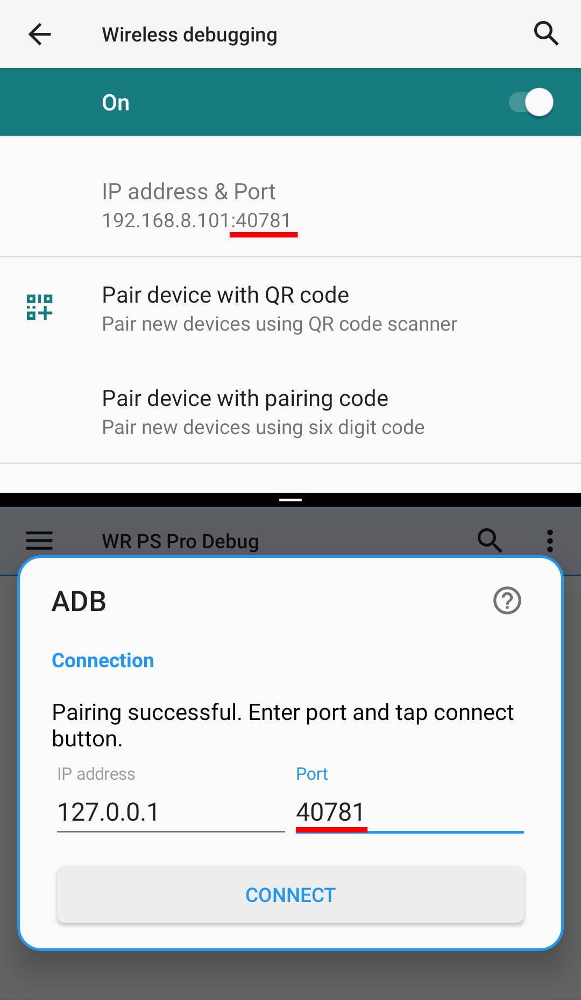
Теперь вы можете оставить включенной Беспроводную отладку. Или лучше отключить его и оставить включенной USB-отладку.
Если вы полностью отключите отладку в настройке "Для разработчиков", или после каждой перезагрузки, вам нужно будет повторить последний шаг.
Для получения дополнительной информации смотрите это.
Вот 1 минутное видео-руководство:
Версии WhatsRunning
WhatsRunning доступно в двух вариантах: Free и Pro версии. Оба варианта доступны в виде релизов в Play Store и GitHub/Telegram. Все четыре варианта имеют разные названия пакетов, поэтому могут быть установлены одновременно.
Платные функции
- Подробности использования ОЗУ:
- ОЗУ всего, свободно, распределено
- ОЗУ используемая активными приложениями, приложениями в кэш, процессами не относящимися к приложениям, ядром и ZRAM
- Общее количество Swap, использование приложениями и процессами, не относящимися к приложениям
- Подробности процесса:
- PPID, PID, UID, GID, группы, количество дочерних процессов, количество тредов (потоков)
- Контекст SELinux, Linux capabilities, CGroups
- Использование ЦП, использование ОЗУ и SWAP
- Приоритет ЦП, приоритет I/O, значение OOM kill
- Исполняемый путь, возраст, использование I/O
- Имя приложения, важность, последнее активное время
- Имена задач (активити), рабочее состояние, последнее активное время
- Имена служб приложений, типы, рабочий статус, номер клиентов, время старта, последнее активное время
- Службы init и фреймворк (если возможно)
- Полный список:
- Системных служб; init и фреймворк
- Службы приложения
- Активные приложения
- Лог состояния приложения
- Сигналы тревоги и запланированные задачи
- Автозапуск приложений
- Вэйклоки и вызовы пробуждения
- Приложения, потребляющие заряд батареи
Смотрите скриншоты для получения более подробной информации.
Часто задаваемые вопросы (FAQ)
Почему WhatsRunning требует root или ADB доступ?
Android не позволяет обычному пользовательскому приложению считывать информацию о процессах других приложений, даже не полностью своих собственных.
Поэтому мы запускаем отдельный демон с высокими привилегиями для того, чтобы обойти ограничения.
По умолчанию, фоновый процесс (демон) запускается с ADB UID (2000) или (если есть root) системным UID (1000). На устройствах с ROOT UID можно изменить в Дополнительных настройках.
Мое устройство без root. Как я могу использовать WhatsRunning?
Использование ADB. Пожалуйста, прочитайте примечание в начале страницы. Существуют некоторые ограничения; на одних устройствах больше, на других меньше.
Почему WhatsRunning требует разрешение INTERNET?
Автономная Pro версия требует подключения к Интернету для проверки лицензии. Две другие версии — бесплатная и Pro из Play Маркет могут работать полностью в автономном режиме. Хотя приложению Play Маркет для проверки лицензии требуется подключение к Интернету.
Необязательное использование разрешения android.permission.INTERNET:
- Проверка обновления приложения. Вы можете отключить это в настройках.
- Получить содержимое справки этой веб-страницы, которую вы просматриваете в выдвижном меню-> Справка.
Локальное (на устройстве) использование разрешения android.permission.INTERNET:
Android не позволяет приложениям создавать сетевые сокеты без разрешения INTERNET, даже если они предназначены только для локального использования, а не для подключения к Интернету. WhatsRunning имеет два варианта использования локальных соединений (на устройстве) (возможность создания сокетов localhost по адресу 127.0.0.1) для межпроцессного взаимодействия (IPC):
- WhatsRunning запускает фоновый процесс с привилегиями root/ADB и общается с этим процессом через сетевой сокет. После первоначального "рукопожатия" оба процесса начинают обмен данными через binder. У нас нет лучшего способа сделать это, потому что Android также не позволяет приложениям общаться через сокеты домена UNIX.
- Если ваше устройство не имеет root-прав и вы используете WhatsRunning с ADB, то для подключения к
adbdтребуются разрешения интернет. Смотрите Шпионит ли РМХ за мной, используя ADB по сети?.
Поэтому, если приложение не может создавать или использовать сокеты локальной сети, оно не будет работать. И если вы хотите запретить WhatsRunning использовать Интернет, это не должно мешать приложению общаться с процессами на устройстве через loopback интерфейс для IPC. Обычно это происходит с брандмауэрами на основе iptables, такими как AFWall+, и брандмауэрами на основе VPN, такими как NetGuard. Но некоторые прошивки имеют встроенную возможность запретить доступ к сети:

Это не только запрещает приложению использовать Интернет, но и отключает его возможность создавать петлевые (loopback) сокеты для IPC. Таким образом, WhatsRunning не сможет получить привилегии root / ADB, если в этом разрешении будет отказано.
Насколько WhatsRunning безопасен для конфиденциальности?
Мы не интересуемся ни вами, ни вашим устройством. Мы не следим за вами. Мы ни в коем случае не собираем ваши данные, даже логи сбоев. Мы верим в то, что наши пользователи образованы, хорошо проинформированы и несут ответственность за свою конфиденциальность. WhatsRunning помогает защитить вашу конфиденциальность.
Вы также можете посмотреть нашу Политику конфиденциальности.
Что такое «Активити / Службы сироты?
Когда приложение работает в фоновом режиме и не используется активно, Android может завершить его родной процесс на любом этапе, для экономии оперативной памяти или для сохранения других ресурсов. Но его АКТИВИТИ (видимая часть) и СЛУЖБЫ могут по-прежнему храниться в записи, чтобы продолжить работу на более позднем этапе. Такие компоненты помечены как "сироты" в WhatsRunning.
В чем разница между пунктами "Использование ЦП" и "Влияние на ЦП" в сортировке?
Влияние на ЦП — это просто время, которое процесс тратит на использование ЦП. Использование ЦП - это отношение процессорного времени к возрасту процесса.
Подробнее см. utime, stime и starttime поля под /proc/[PID]/stat в proc(5).

Таким образом, процессы с высокой загрузкой ЦП и длительным сроком работы службы или процессы с высокой загрузкой ЦП и коротким сроком работы службы следует рассматривать как пожиратели батареи.
Это всего лишь два разных способа анализа и выявления виновных.
Что показывают цифры ввод/вывод в подробностях процесса?
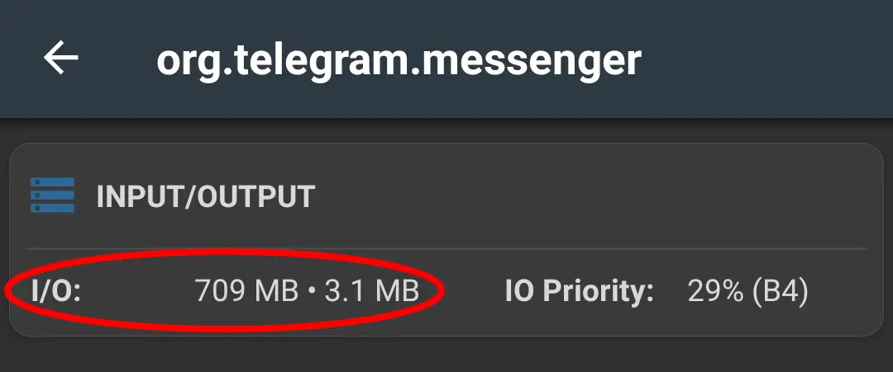Пожалуйста, ознакомьтесь с Какое Android-приложение убивает флэш-память?
Почему я вижу всплывающее уведомление «Процесс не существует»?

Это означает, что выбранный вами процесс, приложение или его компонент в данный момент не работают или отфильтрованы с помощью ( Фильтра процессов).
Загрузки / Скриншоты
Пожалуйста, посетите Github README.
Рейтинги / Обзоры / Комментарии / Голоса / Звезды
Play Маркет Pro версия • Бесплатная версия
APKPure • UpToDown • XDA • ProductHunt
Github • AndroidForums • HackerNews
У Вас есть еще вопросы?
Пожалуйста, ознакомьтесь с Больше FAQs. Или свяжитесь с нами по электронной почте или в Telegram.